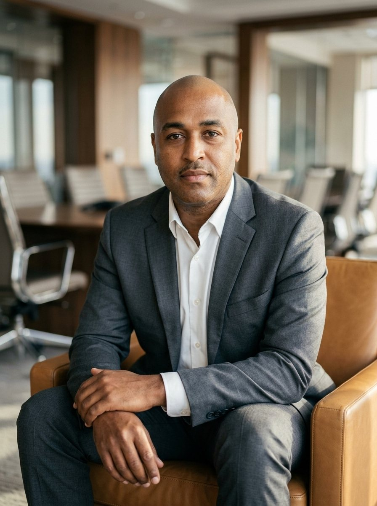

HLegacy Co / Credentials
Credentials
Dominic Hoorn, Senior Manager: Security Risk Management and Forensic Investigations.
Senior manager in security risk management and forensic investigations, with more than twenty years across national security, critical-infrastructure protection, anti-fraud investigation and public-sector procurement. Every HLegacy Co engagement is led and signed off by him personally.

Career
From the front line to the boardroom.
Each stage added a layer: military discipline, protective operations, investigation, governance and, finally, accountability for national critical infrastructure.
1999 – 2004
South African National Defence Force
Corporal. Tactical and platoon command: planning, leading and accounting for people and operations under pressure.
2005 – 2011
South African Police Service, Protection & Security Division
Close protection of Heads of State and Premiers at national level. Commanded the protection detail of UN Secretary-General Kofi Annan at the World Economic Forum, Cape Town, 2007. Advance site surveys, route reconnaissance, venue security and multi-agency protection coordination.
More than ten years
Regional head of security and investigations, national public-sector agency
Led security and investigations across a district-wide Western Cape portfolio. Built the physical security architecture from the ground up, governed outsourced guarding, armed response and electronic security contractors, ran the regional security monitoring and incident-response function, and investigated fraud, embezzlement and theft matters through to prosecution, testifying as an expert witness.
Feb – Sep 2024
Port and logistics security
Outsourced security support to port facility security duties: access control, cargo-integrity verification and incident response at an active freight-handling port of entry.
2024
Security Consultant and Acting Chief Security Officer, National Key Point telecoms portfolio
Appointed Acting Chief Security Officer for three National Key Points: critical telecommunications infrastructure including data centres and cable stations. National Key Point-compliant security architecture, mandatory standards enforcement and regulatory reporting.
Areas of expertise
Six disciplines, practised, not studied.
The depth behind every HLegacy Co report. Each discipline was exercised in live operations, with real assets, real people and real accountability.
Security risk management
Organisation-wide security risk frameworks, from threat assessment to the board’s risk register.
- Threat and risk assessment
- Layered physical security design
- Risk registers and executive reporting
- Security policy and procedure
- Business continuity alignment
Forensic investigation & anti-fraud
Investigations built from mandate to prosecution, and findings that have stood up in court.
- Investigation planning and execution
- Chain of custody and evidence handling
- Interviews and statement taking
- Court-ready reporting
- Expert witness testimony
Fraud & financial crime
Finding the pattern behind the loss, and the people connected to it.
- Fictitious payment detection
- Identity and document fraud
- Internal embezzlement
- Syndicate and collusion mapping
- Supplier and procurement fraud
Security operations & contracts
Holding outsourced providers to what was contracted, and paid for.
- Guarding, armed response and alarm contracts
- SLA and KPI enforcement
- Compliant security procurement
- Budget and variance management
- Multi-site operations
Monitoring & incident command
The central coordination point for incidents across a provincial portfolio, for more than ten years.
- Incident detection and triage
- Threat intelligence application
- Escalation to executive level
- Post-incident investigation
- Law-enforcement liaison
Asset protection & executive protection
Protecting assets, cargo and people where the stakes are highest.
- Loss prevention and shrinkage control
- Cargo and freight protection
- Pre-employment vetting
- Close protection and advance work
- Principal lifestyle security assessment
Method
A documented method, every time.
Our findings carry weight because of how they are reached: recognised methods, applied the same way on every engagement.
International risk-management standard
Risk work aligned with ISO 31000: scope and criteria agreed first, then identification, analysis and evaluation, then treatment plans with owners, dates and residual risk.
Root-cause analysis
Incidents examined with the Incident Cause Analysis Method (ICAM): we look past the immediate act to the absent defences and organisational conditions that let it happen, so it does not happen again.
Government security standards
For state and critical-infrastructure clients, the government’s minimum information and physical security standards, the National Key Points framework and national vetting requirements.
Standard of evidence
Every finding traceable to its source, every step recorded, and every report written to withstand scrutiny by a board, a tribunal or a court.
He has held a national security clearance and worked alongside law-enforcement, intelligence and prosecuting authorities throughout his public-sector career.
Legal framework
The law we work within, daily.
Not a list for show. These are the statutes his work has been governed and audited against for more than twenty years.
Security & governance
- Private Security Industry Regulation Act
- National Key Points Act
- Protection of Information Act
- Control of Access to Public Premises and Vehicles Act
- Protection of Personal Information Act
Finance & procurement
- Public Finance Management Act and Treasury Regulations
- Broad-Based Black Economic Empowerment Act
- Financial Intelligence Centre Act
- National Credit Act
Criminal, labour & safety
- Criminal Procedure Act
- Labour Relations Act
- Basic Conditions of Employment Act
- Occupational Health and Safety Act
Qualifications
Qualified in both halves of the work.
Security risk management to prevent the loss. Forensic investigation to prove it when it happens.
NQF 7 · Postgraduate
B Tech Forensic Investigations
University of South Africa (UNISA)
- Forensic Methods and Techniques, to senior-management level
- Principles of Evidence in Forensic Investigation
- Criminal Law and Criminal Procedure in Forensic Investigation
- Forensic Auditing
- Intelligence-Led Investigation Management
- Investigation of Economic Crime, Corruption and Cybercrime
- Forensic Crime Intelligence and Information Gathering
- Identification in Forensic Investigation
NQF 6 · Business Management major
National Diploma: Security Risk Management
University of South Africa (UNISA)
- Applied Security Risk Management
- Security Risk Control Measures I–III
- Integrated Security Risk Project Management
- Corporate Investigation I–III
- Security Technology and Information Security
- Principles of Crime Prevention, Reduction and Control
- Management and Business Management
- Commercial Law and Individual Labour Law
Registration
PSIRA Grade Special
Registered with the Private Security Industry Regulatory Authority as a security advisor and investigator (Reg. 2976170). Tell us what is at stake, and we will confirm how we can help.